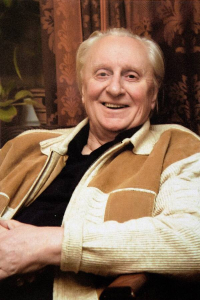
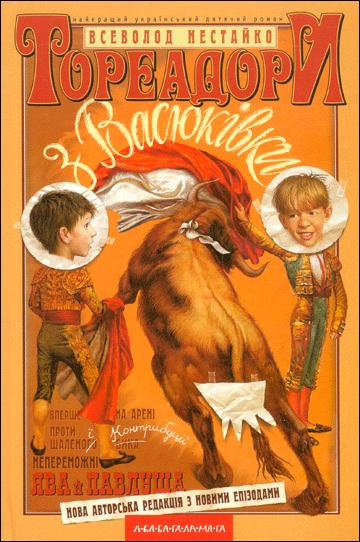
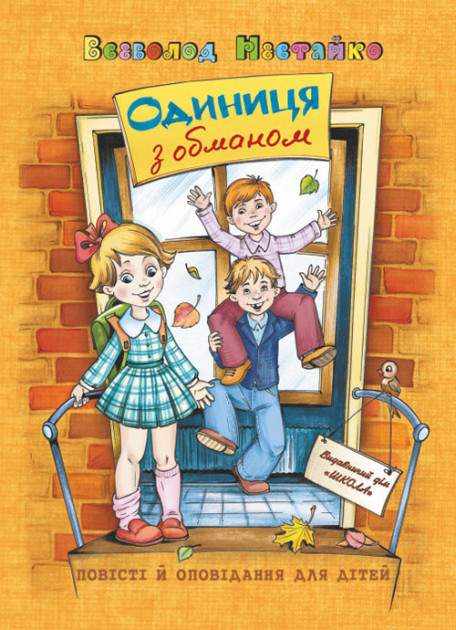
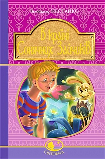
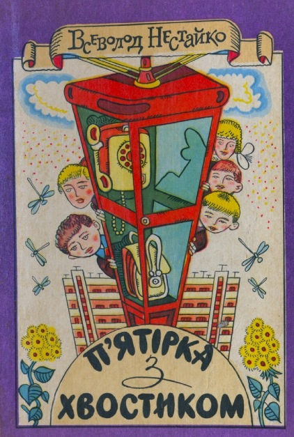
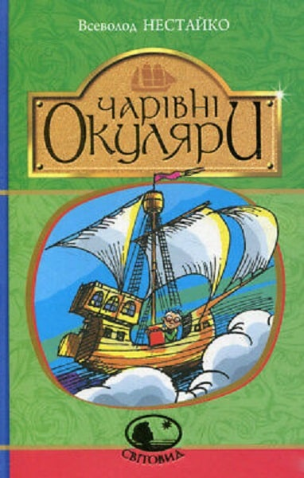

Біографія

Всеволод НЕСТАЙКО народився 30 січня 1930 року в місті Бердичів на Житомирщині. Батько,
Зиновій Денисович, під час Першої світової війни був січовим стрільцем. 1933-го
заарештований; загинув у концтаборі. Мати Марія Іванівна викладала російську мову й
літературу. По смерті батька переїхала із сином до Києва. Закінчив філологічний факультет
Київського університету імені Тараса Шевченка. Працював у редакціях журналів ”Дніпро”,
”Барвінок”, у видавництвах ”Молодь” та ”Веселка”. На Національному радіо вів щомісячну
передачу ”Радіобайка Всеволода Нестайка”.
Написав близько 30 книжок – оповідання, казки,
повісті та п’єси. Найвідоміші з них: ”В Країні Сонячних Зайчиків”, ”Робінзон Кукурузо”,
”Тореадори з Васюківки”, ”Одиниця з обманом”, ”Незвичайні пригоди в лісовій школі”,
”П’ятірка з хвостиком”, ”Неймовірні детективи”. Твори Нестайка перекладені 20 мовами,
зокрема, арабською та бенгалі. Загальні наклади його книжок – понад два мільйони
примірників. Трилогія ”Тореадори з Васюківки” внесена до списку Ганса Крістіана Андерсена як
один із найвидатніших творів сучасної дитячої літератури. Однойменний кінофільм 1968-го на
міжнародному фестивалі в Німеччині здобув Гран-прі. На фестивалі в Австралії наступного року
– головну премію.
Лауреат літературної премії імені Лесі Українки за повість-казку
”Незвичайні пригоди в лісовій школі”, лауреат премії Миколи Трублаїні – за повість-казку
”Незнайомка з Країни Сонячних Зайчиків”. Нагороджений орденом Ярослава Мудрого IV ступеня. У
місті Дружківка на Донеччині з 2004 року працює дитяча бібліотека імені Всеволода Нестайка.
62 роки прожив у шлюбі зі Світланою Пилипівною. Донька 60-річна Ольга – філолог. Онуки
30-річний Антон – піарник, 28-річний Андрій – юрист. Мешкав у Києві на Печерську. Помер 16
серпня 2014 року
Топ-5 книг письменника

"Тореадори з Васюківки"

"Одиниця з обманом"

"В країні Сонячних Зайчиків"

"П'ятірка з хвостиком"

"Чарівні Окуляри"
Цікаві факти
Загальний тираж його книжок сягає більше 3млн примірників
Письменник 10 років вів радіопередачу "Радіобайка від Всеволода Нестайка"
Ми з одного міста
Фільм “Тореадори з Васюківки” демонструвався в 72 країнах світу
Всеволода Нестайка вважають основоположником українського дитячого детективу
Нестайко написав листа в мою школу